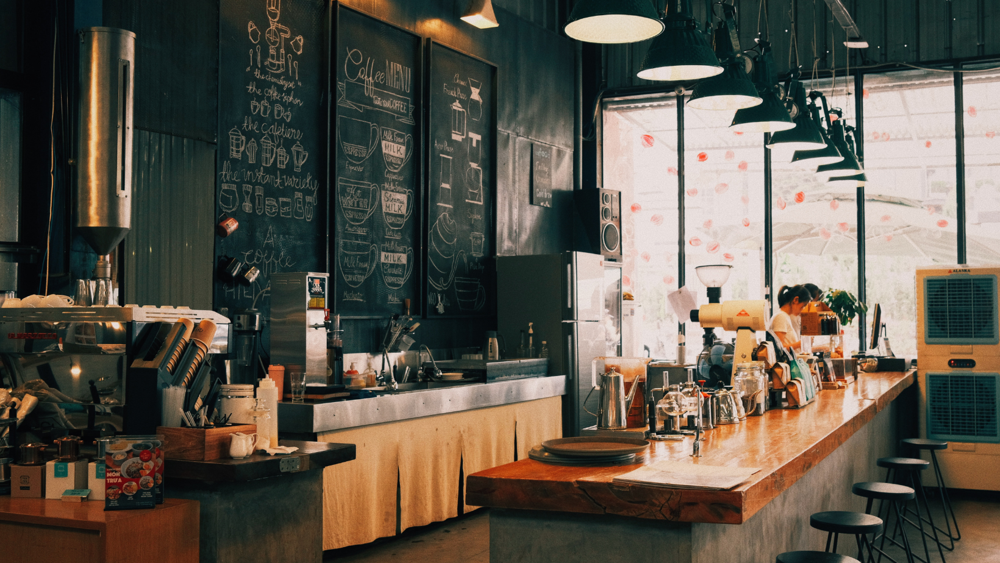
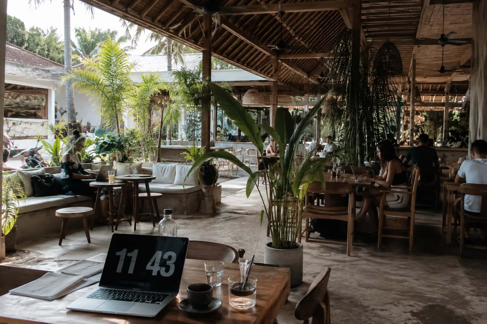
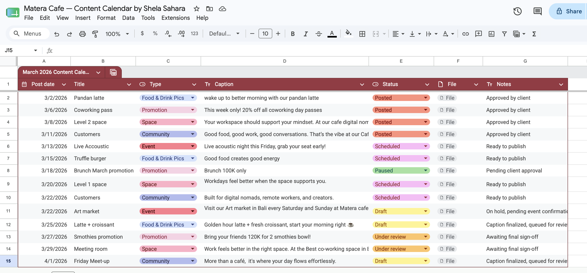
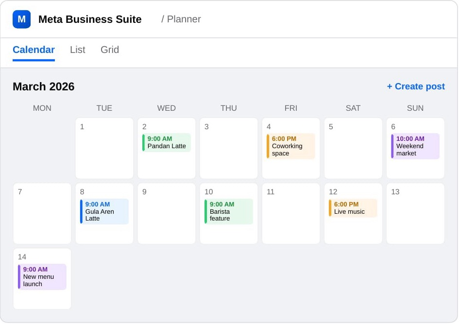
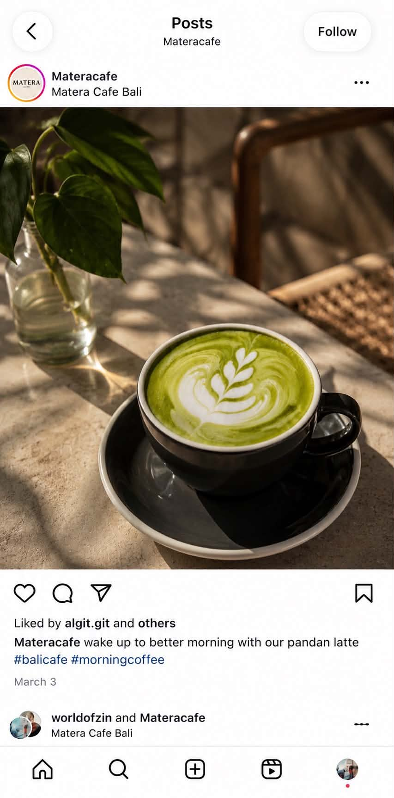
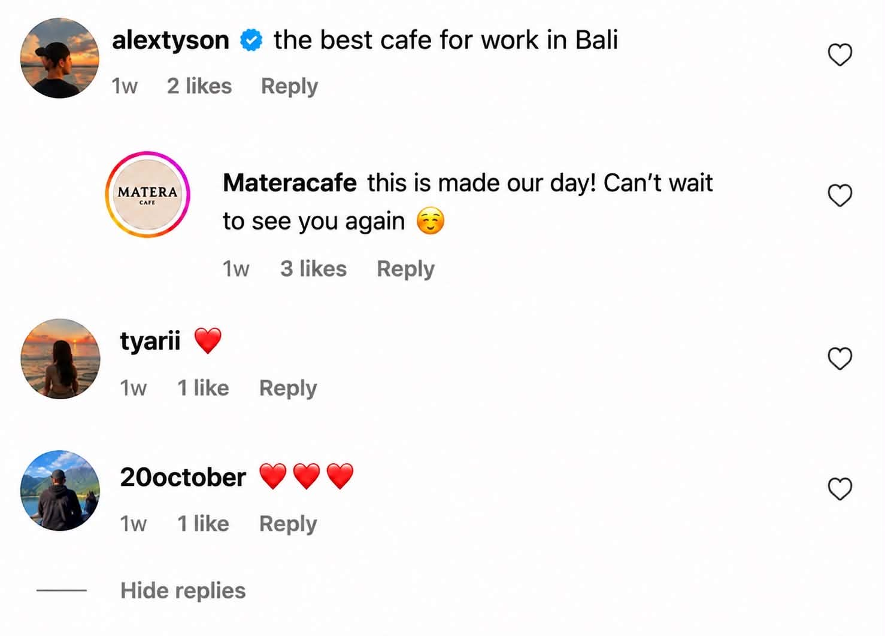
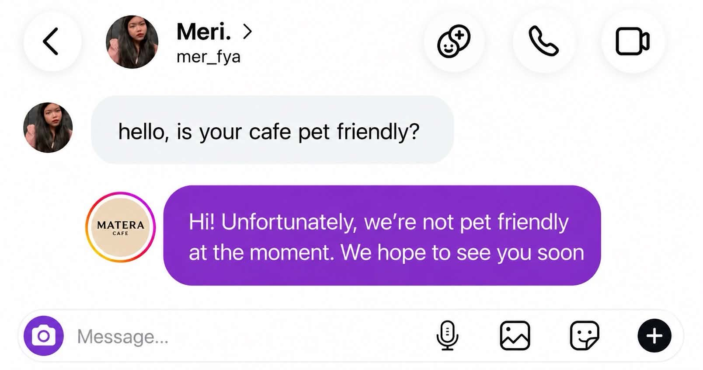
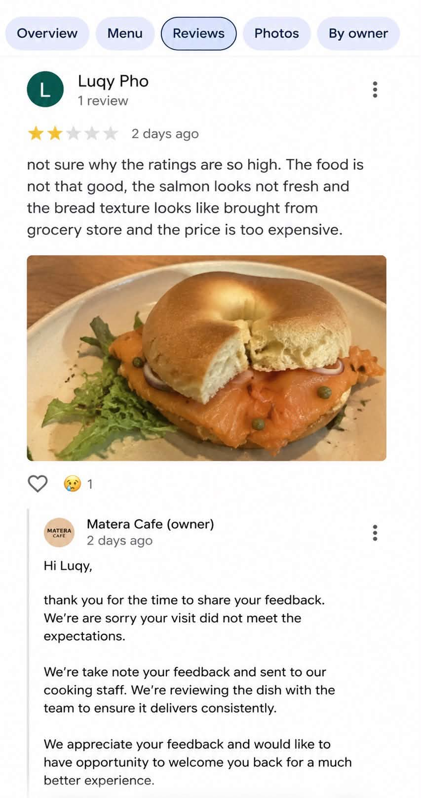
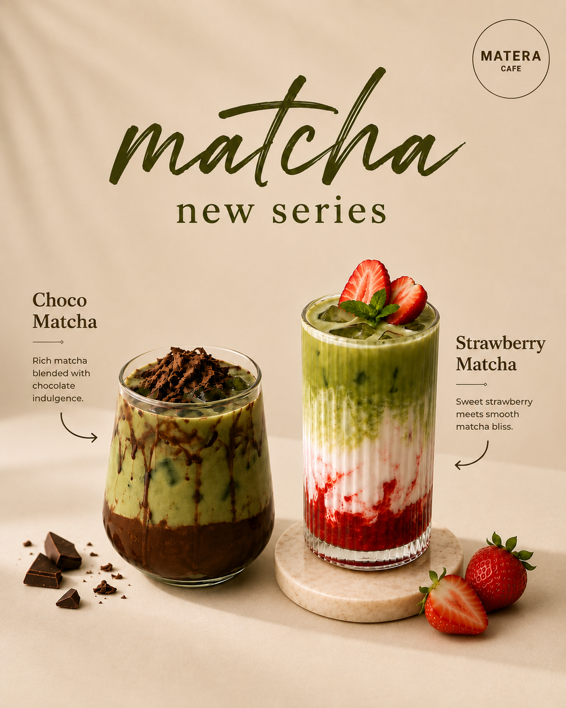
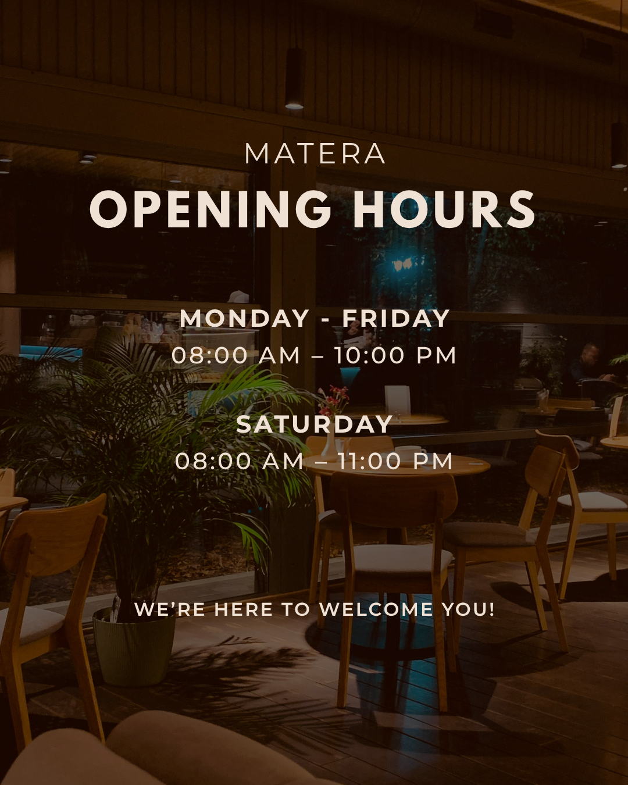

Coffee, Food and
Co-working Space
Matera Cafe is a modern coffee shop in Bali that blends specialty coffee, an all-day food menu, and a co-working space. Designed for people who want to work, meet, unwind, or gather for community meet-ups, it offers reliable wifi, comfortable seating, and a calm, relaxed atmosphere, making it just as easy to stop by for a quick coffee as it is to settle in for the whole day or bring people together.
Arranging Instagram Presence
The goal of this project was to bring structure and consistency to Matera Cafe's content management, helping the Instagram page feel active and connected to its community.
No social media structure
Built a content planning system
- Created a monthly content calendar in Google Sheets, laying out promotions, events, and daily posts ahead of time.
- Scheduled posts 2–3 weeks in advance using Meta Business Suite.
- Coordinated with design, marketing, social media staff, and the manager to keep content aligned.
Low engagement
Active Interaction
- Actively responded to Direct Messages.
- Replied to comments and reposted customer content.
- Monitored and maintained Google Reviews.
Supporting The Brand Behind The Scenes
Content Calendar Management & Scheduling
Community Management
Design Support
Content Calendar Management & Scheduling
Content Calendar Management
Planned monthly social media content to maintain a consistent posting calendar and ensure content was organised around Matera Cafe's products, atmosphere and audience.

Content Scheduling
I took content from planning through to execution — scheduling and publishing posts in Meta Business Suite to maintain a consistent, client-approved posting schedule.


Community Management
The more I engage with an audience, the more I build community, and the more I build trust.
WHAT I DID
Broaden Reach Through Real Interaction
Engaged with customers through comments and conversations to encourage meaningful interactions. Active engagement can help increase visibility, encourage further interaction, and surface content to a wider audience.
Build Trust Through Timely Responses
Provided timely responses to comments, enquiries, direct messages and reviews. Consistent and meaningful interactions help build stronger relationships and can turn followers into loyal advocates.
Strengthen Brand Reputation
Maintained a warm, friendly and professional brand voice in public interactions. Showing genuine care helps customers feel heard and seen while contributing to a stronger brand perception.

Comment

Google Review

Direct Message
Design Support
Supporting graphic design using Canva, CapCut, and AI to create engaging social media content.


SKILLS DEMONSTRATED
What I Brought To The Project
PROJECT OUTCOME
Improved Organic Engagement Through Planning and Interaction
Improved from inconsistent, ad-hoc posting to a structured, organised content system.
Maintained active, timely responses to customers across DMs, comments, and reviews.
Supported eye-catching visual content that stayed true to Matera's brand identity.
Gave the client a repeatable system to manage social media without daily stress.